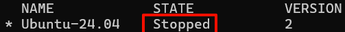

环境配置
WSL环境配置
WSL（Windows Subsystem for Linux）是微软开发的一项技术，允许用户在Windows系统中直接运行完整的Linux环境，无需虚拟机。通过操作系统级虚拟化，WSL将Linux子系统无缝嵌入Windows，提供原生Linux命令行工具、软件包管理器及应用程序支持。它具有轻量化、文件系统集成、良好的交互性及开发效率提升等优点，消除了Windows与Linux之间的隔阂，尤其适合开发者和需在Windows平台上使用Linux工具的用户。
安装WSL分发版
查看系统上安装的WSL分发版：
设置分发版版本：
PowerShell wsl - -set-version < 分发版名称 > < 版本号 >
查看可以在线安装的WSL分发版：
安装WSL分发版：
其中分发版名称需为上面列出的名称之一（注意大小写）。
安装时需要输入默认用户及密码。
此时WSL子系统会默认安装到C盘，可以通过以下命令将其移动到其他盘符。
WSL子系统迁移到其他盘符
停止子系统
查看系统上安装的WSL分发版的运行状态：

需要确保要迁移的子系统处于Stopped状态，如果子系统在运行状态，运行
以停止子系统。
导出WSL子系统备份
新建一个文件夹，然后将子系统的备份文件导出到该文件夹。命令示例：
PowerShell wsl - -export Ubuntu - 24 . 04 G :\ Ubuntu24 . 04 \ Ubuntu2404 . tar
其中Ubuntu-24.04为子系统名称，G:\Ubuntu24.04为导出路径。
注销原子系统
确定在此目录下可以看见备份Ubuntu.tar文件之后，注销原有的wsl子系统。
PowerShell wsl - -unregister Ubuntu - 24 . 04
恢复子系统
将备份文件恢复（导入）为新的子系统：
PowerShell wsl - -import Ubuntu - 24 . 04 G :\ Ubuntu24 . 04 G :\ Ubuntu24 . 04 \ Ubuntu2404 . tar
这时候启动WSL，发现好像已经恢复正常了，但是默认用户变成了root，之前使用过的文件也看不见了。
恢复默认用户
PowerShell Ubuntu2404 config - -default-user rex
请注意，这里的发行版名称的版本号是纯数字，比如Ubuntu-24.04就是Ubuntu2404。
最后的参数（这里的rex）为默认用户名。
启动WSL子系统
如果直接运行
命令，会以挂载的硬盘为路径启动子系统，而非WSL系统中的路径。
解决办法是用
来启动，这样启动后默认路径为WSL子系统的home目录。
安装Fish Shell
Fish Shell是一款功能丰富的命令行shell，可以用来替代默认的Bash shell。
Bash apt-add-repository ppa:fish-shell/release-3
apt-get update
apt-get install fish
将Fish Shell设置为默认shell：
修改默认软件源
将默认软件源更改为国内的镜像源，有助于提升软件安装速度
首先备份原有软件源：
Bash cp /etc/apt/sources.list /etc/apt/sources.list.bak
然后编辑软件源文件：
Bash vim /etc/apt/sources.list
将原有软件源注释掉（如果有的话），然后在清华大学开源软件镜像站 找到对应系统的软件源，将其粘贴到文件中保存。
例如Ubuntu-24.04的镜像源为：
Text Only
接下来更新安装源列表：
Bash apt update && sudo apt -y upgrade
安装pip包管理器
Ubuntu系统会自带Python解释器，如Ubuntu24.04默认安装Python3.12.3，但pip包管理器不会自带，需要手动安装：
Bash apt install python3-pip
创建python软链接
默认安装的python3.12会有一个python3的软连接，可以进一步创建python软链接到python3.12：
Bash cd /bin
ln -s python3.12 python
这样就可以用python命令来运行python3.12了。
谨慎
在 Linux 中删除软连接不要使用rm -rf，因为一旦加上/就会删除源文件，该操作危险性较高。正确的做法是
sudo unlink <link_name>
安装 GIMP
GIMP 是一种免费的开源光栅图形编辑器，用于图像操作和图像编辑、自由形态绘图、不同图像文件格式之间的转码，以及更专业的任务。
若要启动GIMP，可以直接在终端输入：
安装 Nautilus
Nautilus 也称为 GNOME Files，是 GNOME 桌面的文件管理器。 （类似于 Windows 文件资源管理器）。
Bash apt install nautilus -y
若要启动，请输入：
安装 VLC
VLC 是一种免费的开源跨平台多媒体播放器和框架，可播放大多数多媒体文件。
若要启动，请输入：
安装 X11 应用
X11 是 Linux 窗口管理系统，这是随它一起提供的各种应用和工具的集合，例如 xclock、xcalc 计算器、用于剪切和粘贴的 xclipboard、用于事件测试的 xev 等。有关详细信息，请参阅 x.org 文档。
Bash apt install x11-apps -y
若要启动，请输入要使用的工具的名称。 例如：
xcalc、xclock、xeyes
安装适用于 Linux 的 Microsoft Edge 浏览器
Bash ## Setup
https://packages.microsoft.com/keys/microsoft.asc | gpg --dearmor > microsoft.gpg
install -o root -g root -m 644 microsoft.gpg /usr/share/keyrings/
sh -c 'echo "deb [arch=amd64 signed-by=/usr/share/keyrings/microsoft.gpg] https://packages.microsoft.com/repos/edge stable main" > /etc/apt/sources.list.d/microsoft-edge-dev.list'
rm microsoft.gpg
## Install
apt update
apt install microsoft-edge-dev
若要启动，请输入：
安装网络工具
Bash apt install net-tools
安装桌面环境
安装Ubuntu桌面版
默认情况下，WSL2安装的是服务器版Ubuntu，没有图形界面。要安装桌面环境，可以根据自己的喜好安装 KDE、Gnome、xfce、lxde 等桌面环境。Gnome是 Ubuntu 的默认桌面上环境，也是多数发行版的默认桌面环境，这里以xfce为例进行安装：
Bash apt install xubuntu-desktop
安装XRDP
安装xrdp服务并启动：
Bash apt-get install xrdp
systemctl start xrdp
将xrdp用户添加到ssl-cert用户组：
Bash adduser xrdp ssl-cert
重启xrdp服务：
Bash systemctl restart xrdp